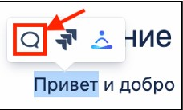

Введение
Этот документ определяет базовые принципы работы с документаций и помогает поддерживать единый стиль.
Общие принципы
При создании и ревью документации опирайтесь на пять принципов:
1. Краткость и простота изложения
Пишите доступно и лаконично. В активном залоге, без канцеляризма.
2. Структура
Используйте емкие заголовки, разбейте текст на абзацы, а длинные предложения разбейте на короткие. Действия пользователя должны быть последовательными и приводить к конкретному результату.
3. Грамотность
Перед тем, как начать писать документ, прочитайте этот Стайлгайд. Во время написания текста пользуйтесь ресурсами из нашей подборки, которые помогут писать правильно и понятно. После написания документа просите коллег вычитать ваш текст перед публикацией — этот процесс называется кросс-ревью. Эти шаги помогут сделать текст более грамотным.
4. Стилистика
Придерживайтесь единой тональности, одинаково оформляйте ссылки, списки, плашки, врезки, примечания и картинки.
5. Польза и удобство для читателя
Объясняйте сложное простыми словами. Не используйте узкопрофессиональные термины, не вдавайтесь в детали, которые не соответствуют цели и заголовку документа.
Внешний вид документации в Confluence
Единый стиль оформления помогает читать документацию и узнавать важную информацию о ней: имя владельца, статус и дату изменений. В этом разделе описаны обязательные элементы в Проектной документации и правила их оформления.
В начале документа
В статье Confluence в разделах Проектной документации должны быть элементы:
Оглавление
Чтобы добавить оглавление, используйте макрос «Оглавление».
Если оглавление очень длинное, используйте макрос «Раскрыть». Используйте «Оглавление» в качестве заголовка при использовании макроса.
Табличка с версиями документа
Используйте макрос «Изменить статус» и настройте его, чтобы было видно два последних изменения.
Табличка с владельцем документа, его статусом и датой начала работы над ним
Чтобы оформить статусы, используйте макрос «Статус». Возможны три статуса:
IN PROGRESS — синего цвета
REVIEW – желтого цвета
DONE — зеленого цвета
Чтобы расположить оглавление и версии текста рядом на странице, используйте функцию «Разметка страницы»
Пример оформления
В документе
Если разделы вашего документа содержат несколько подразделов, делайте оглавление каждого раздела в начале. К каждому подразделу добавьте ссылку.
Пример оформления

В конце документа
В конце документа обязательно включите раздел Артефакты и связанные материалы — туда добавляйте ссылки на материалы, которые вы использовали при подготовке документа.
Они помогут получить более подробную дополнительную информацию по теме.
Добавляйте артефакты:
• ссылки на задачу в Jira;
• ссылки на схемы в Figma, BPMN или Miro;
• электронные письма с информацией по документу;
• ссылки на другие документы, которые помогут лучше понять ваш документ.
Внешний вид таблички:
| Название и ссылка | Описание | Комментарий |
|---|---|---|
| Здесь укажите полное название и оформите ссылку. Например: Схема взаимодействия. |
Опишите в 1–2 предложениях,что это за материал или другой артефакт | Необязательное поле. В нем напишите то, что, как вы считаете, важно упомянуть. Например: Описывает взаимодействие команд Atomverse. Например: Обновили схему 01.01.1900. В будущем планируется доработка. |
Комментарии
Когда вы оставляете комментарии к документации коллег, используйте комментарии к тексту:

Если вашу статью прокомментировали, после проработки комментария по согласованию с комментатором переведите комментарий в статус решенного. Не оставляйте неразрешенные комментарии после перевода документа в статус DONE.
Если после финализации документа остаются нерешенные вопросы, оставляйте их в информационных блоках. Вы также можете вынести список нерешенных вопросов в отдельный блок в конце документа.
Важно: для нерешенных вопросов пишите, почему или кем они заблокированы, а также условия и примерные сроки решения. Если есть ссылки на артефакты, которые могут дать дополнительную информацию, оставляйте ссылки на них.
Написание документации
Сначала
Перед тем, как начать писать документ, ответьте на два вопроса:
-
Кто будет его читать? Это могут быть члены вашей команды или коллеги из других команд. Держите вашу целевую аудиторию в центре внимания при написании документа.
-
Зачем его читать? Какая проблема должна решиться? Планируйте документ так, чтобы цель читателя была достигнута.
Оформление
Структура
Используйте заголовки 1-го, 2-го и 3-го уровней. Это поможет структурировать документ и сделать его удобным для читателя.
В начале документа сделайте введение. Во введении коротко расскажите, о чем этот документ, кому он может быть полезен.
Используйте предварительные условия для инструкций. Если предварительные условия описаны подробно в других статьях, добавьте ссылку на эти статьи. В конце инструкции четко указывайте результат, к которому должен прийти читатель.
Абзацы
Чтобы текст не был сплошным, разбивайте его на абзацы с использованием заголовков и подзаголовков. Руководствуйтесь принципом «Один абзац – одна мысль».
Не путайте абзац с заголовком. Абзац разделяет несколько мыслей одной темы, заголовок разделяет разные темы.
Списки
Создавайте списки для оформления порядка действий, обобщения, перечисления более трех предметов и сущностей.
Есть два вида списков: нумерованные — с цифрами или буквами, и маркированные — без цифр и букв.
Нумерованный список описывает порядок действий, последовательность или приоритеты. Пункты нумерованных списков начинаются с заглавной буквы и заканчиваются точкой.
Пример:
-
В меню Файл выберите Открыть базу данных.
-
В поле Имя пользователя введите ваше имя.
-
В поле Пароль введите ваш пароль, затем нажмите ОК.
Обязательно нумеруйте шаги процесса.
Пример:
Чтобы начать работу, выполните шаги:
Шаг 1.
Откройте ноутбук.
Шаг 2.
Нажмите кнопку включения.
Шаг 3.
Введите ваш пароль для входа.
Или:
Чтобы, включить ноутбук, выполните шаги:
-
Откройте ноутбук.
-
Нажмите кнопку включения.
-
Введите пароль для входа.
Маркированный список перечисляет варианты или набор требований или характеристик без последовательности. Пункты маркированных списков могут начинаться с маленькой буквы, и тогда они заканчиваются точкой с запятой.
Если маркированный список состоит из предложений, они также могут заканчиваться точкой, и тогда каждый следующий пункт начинается с большой буквы.
Если в списке более 10 пунктов, сделайте такой список раскрывающимся, это визуально сократит статью.
Пример:
У владельца базы данных есть возможность:
• создавать и удалять базу данных;
• добавлять, удалять или редактировать документы;
• изменять любую информацию.
Ссылки
Используйте краткий, но содержательный текст для ссылок. Используя заголовок или описание страницы, вместо общих фраз, таких как «нажмите здесь».
Примеры
| ❌Как не писать | ✅Как писать |
|---|---|
| Нажмите здесь, чтобы узнать больше о стоп-словах при написании текста. Здесь можно узнать, как оформлять адресы и телефоны: https://confluence.e-kama.com/pages/viewpage.action?pageId=105452152#idСтайлгайд-Контакты,телефоны,адреса |
В разделе Как писать понятно можно почитать о стоп-словах подробнее. В разделе Контакты, телефоны, адреса есть примеры оформления. |
Картинки
Изображения, скриншоты, логотипы и значки делают инструкции понятнее. Они помогают пользователю лучше ориентироваться в интерфейсе систем и сервисов. Добавляйте их, когда текстового описания недостаточно.
Значки используйте для замены текстового описания элементов интерфейса.
Изображение на скриншоте должно быть читаемым и отражать реальный интерфейс, а не макет приложения или системы. Если на скриншоте есть настоящие данные пользователей, обязательно удалите их.
Правила оформления картинок:
-
Скриншоты одного раздела должны быть одинаковыми по ширине.
-
На рисунках выделяйте те элементы интерфейса, про которые идет речь в тексте.
-
Выделяйте элементы интерфейса квадратной рамкой красного цвета.
-
Стрелки на рисунках должны быть красного цвета.
Названия кнопок
Используйте полужирный шрифт без кавычек для названия кнопок. Если у кнопки нет названия, вставьте иконку.
Названия полей, разделов, опций и действий
Используйте жирный шрифт в названиях полей, разделов, опций и действий.
Примеры:
• Документация по продуктам находится в разделе Проектная документация.
• В поле Пароль введите пароль.
Информационные вставки
Используйте информационные вставки для привлечения внимания читателя к важной информации в документации. Используйте макросы Предупреждение, Подсказка и Примечание.
Примеры

Используйте информационные вставки, когда:
-
хотите дать полезную информацию или совет, который поможет лучше понять содержимое;
-
хотите привлечь внимание к важной информации. Например, нужно обратить внимание на особые условия или выделить важные взаимосвязи;
-
хотите показать, что есть серьезные ограничения или блоки. В этом случае нужно явно указать сроки решения, если сроков нет — написать об этом.
Не используйте информационные вставки, когда нужно привлечь внимание коллег к тому, что требует доработки в документации. Информационные блоки — не средство общения по документу. Чтобы задать вопрос или прокомментировать часть документа, используйте комментарии.
Дата, время и место
Время и дата
Пишите время цифрами с двоеточием между часами и минутами — 15:30.
Дату пишите также цифрами — 21.05.2024.
Контакты, телефоны, адреса
Пишите в формате:
Тел.: 8 (800) 123-45-67
Адрес: Москва, Холодильный пер., 6-1
Эл. почта: hr@atom.team
Ссылки на социальные сети размещайте в виде QR-кодов или кнопок.
Как писать понятно
Стоп-слова и стоп-выражения
Стоп-слова и стоп-выражения можно удалить без потери смысла. Они увеличивают объем текста и делают его непонятным.
Основные группы и примеры стоп-слов и стоп-выражений:
Примеры
| ❌Как не писать | ✅Как писать |
|---|---|
| Это суперскоростной автомобиль. Настраивайте абсолютно все параметры вручную. Этот метод является эффективным решением для обработки больших объемов данных. Модуль предоставляет различные функции для анализа данных. |
Этот автомобиль развивает скорость до 300 км/ч. Настраивайте все параметры вручную. Этот метод позволяет обрабатывать большие объемы данных с высокой скоростью. Модуль предоставляет функции для анализа данных, такие как фильтрация и сортировка. |
Термины и определения
Объясняйте термины, которые могут быть незнакомы целевой аудитории. Не заменяйте введенный термин синонимами.
Все термины и сокращения, которые мы используем в работе, изложены в Глоссарии и Проектных терминах.
При первом упоминании термина в документе давайте его определение.
Если определение очень длинное, можно дать ссылку на термин в Глоссарии или Проектных терминах.
Многозначные термины
В документах часто приходится использовать термины, которые имеют много значений в зависимости от контекста, от компании и даже от проекта.
Вот список основных:
-
Клиент
-
Сервис
-
Сервер
-
Интерфейс
-
Пользователь
-
Асинхронность
С осторожностью используйте такие слова: заменяйте их, когда возможно. Если заменить такой термин невозможно, определите его в начале документа.
Иностранные слова
Старайтесь не перегружать текст иностранными словами. Иначе людям, которые не владеют английском, будет сложно понять документ.
❌ экспертиза, митинг, юзкейс, спека
✅ экспертная область, встреча, сценарий использования, спецификация
Список терминов, которые приняты в компании есть в Проектных терминах.
Если вы используете иностранные слова в тексте, пишите их кириллицей (русскими буквами).
В таблице приводим несколько правил написания иностранных слов
| Правило | Пример |
|---|---|
| Пишите иностранные слова русскими буквами. | аджайл апгрейд бэкэнд |
| Распространенные аббревиатуры можно оставлять на латинице. | UI/UX PR HR |
| Пишите сложные иностранные слова через дефис вне зависимости от того, на русском они или на английском. Исключение — слова, которые мы знаем уже давно. Их написание становится ближе к правилам русского языка. Исключений становится больше, проверяйте в словаре, если сомневаетесь. | UI-дизайнер интернет-маркетинг CММ-менеджер онлайн-шопинг Исключения: вебсайт мультимедиа |
| Названия компаний, брендов и их продуктов на английском языке в русском тексте пишутся без кавычек. | Это продукт компании Microsoft. Весь дизайн команда делает в Figma. |
«Вы» и «Ваш»
«Вы» и «Ваш» пишем с большой буквы только в начале предложения. В остальных случаях — с маленькой.
Буква «ё»
Пишем «е» во всех случаях, когда ее использование не вызывает разночтений.
Если слово без «ё» и с ней имеет разное значение, пишем «ё».
Например: все и всё. Но: еще, объем, съемка.
Элементы интерфейса и действия в нем
Нажмите кнопку, а не нажмите на кнопку.
Пройдите по ссылке, а не нажмите на ссылку.
Наведите курсор, а не наведите мышку.
Речевые обороты
Важно, чтобы текст воспринимался ясно и однозначно и не было разночтений. Для этого длинные предложения разбивайте на короткие. По возможности не используйте причастные b деепричастные обороты — они усложняют понимание и часто приводят к ошибкам.
Примеры
| ❌Как не писать | ✅Как писать |
|---|---|
| Для обновления системы необходимо скачать новый файл и установить его, следуя инструкциям. | Для обновления системы скачайте новый файл. После этого установите его по инструкциями. |
| Нажимая на кнопку Далее, вы перейдете к следующему шагу. | Нажмите кнопку Далее, чтобы перейти к следующему шагу. |
| Приложение, установленное на устройстве, должно быть обновлено до последней версии перед началом работы. | Перед началом работы обновите приложение до последней версии. |
Знаки препинания
Кавычки
Используйте кавычки «елочки» для прямой речи и цитат.
Не используйте кавычки "лапки" для русского текста.
Тире и дефис
Используйте длинное тире для упрощения предложения и пояснения сказанного.
Используйте короткое тире, чтобы обозначить интервал или знак «минус».
Используйте дефис для присоединения частиц или префиксов, в словосочетаниях и сложносоставных словах.

Скобки
В скобках обычно размещается второстепенная информация. Если она важная, вытаскивайте ее в отдельное предложение, если нет, то удаляйте вместе со скобками.
Примеры
| ❌Как не писать | ✅Как писать |
|---|---|
| После выполнения этой команды (выполняется через терминал) система перезагрузится. | После выполнения этой команды через терминал система перезагрузится. |
| Проект должен быть завершен в срок (до 30 сентября). | Проект должен быть завершен в срок до 30 сентября. |
Прочие знаки препинания
Точка с запятой: используйте точку с запятой только в маркированном списке. Если вы разделяйте предложение точкой с запятой, разбейте это предложение на два коротких.
Многоточие: разработчики используют многоточие в тексте, чтобы показать, что после нажатия на кнопку откроется диалоговое окно. Мы — нет.
Восклицательный знак: не используйте восклицательный знак в документации. Восклицательные знак воспринимается как разговор на повышенных тонах.
Примеры
| ❌Как не писать | ✅Как писать |
|---|---|
| Убедитесь, что вы установили все необходимые зависимости перед запуском программы! | Убедитесь, что вы установили все необходимые зависимости перед запуском программы. |
| Обновите систему до последней версии; также необходимо провести тестирование на совместимость с оборудованием. | Обновите систему до последней версии. Затем протестируйте систему на совместимость с оборудованием. |
Числительные
Числа vs. слова
| Правило | Примеры |
|---|---|
| В заголовках числа пишите цифрами — так короче и нагляднее. | 5 фактов об электромобилях, которые вы могли не знать. |
| В остальных случаях цифры от нуля до девяти пишем прописью. Начиная с 10 — цифрами. |
10 скриншотов пять баз данных |
| Пишите числами диапазоны, «разы», даты, измерения, проценты, номера разделов и страниц, время, миллионы | от 6 до 8 лет 4 раза 3 сентября 2 м глава 3 страница 4 5 миллионов |
| Если один из объектов требует числительного, используйте числительные для всех остальных объектов тоже. | В первой статье 16 страниц, во второй — 7 страниц. |
Наращивание
| Правило | Примеры |
|---|---|
| Наращивание числительных нужно только для порядковых числительных: отвечают на вопрос: какой по счету? | на 5-й день 25-я годовщина 1980–1990-е годы Важно: в 2023-м, но в 2023 году |
| Наращивание не требуется при записи количественных числительных — отвечают на вопрос: сколько?, — календарных чисел и в номерах томов, глав, страниц. | список из 15 пунктов 10 ноября 2023 года на с. 16, в табл. 2 |
Большие числа
Четырехзначные числа пишите слитно. Пятизначные и более числа пишите с разделителем.
Примеры:
4559
9999
10 000
452 000
Диапазоны
Между числами ставьте среднее тире без пробелов, если числа написаны цифрами, и дефис — если прописью (буквами).
Пример:
3–4 дня
но три-четыре месяца
Числительные – 24
Полезные сервисы для работы с текстом
| Сервис | Чем полезен | Как работает |
|---|---|---|
| [Главред][https://glvrd.ru/] | Проверяет текст на стоп-слова и читаемость. | Нужно добавить текст на портал, а сервис подскажет, что можно улучшить. |
| Типограф | Убирает лишние пробелы, привязывает союзы и предлоги к словам. | Нужно вставить текст на портал, и сервис подскажет, что изменить. |
| LanguageTool | Проверяет грамматические и орфографические ошибки. | Нужно добавить текст на портал, и сервис подсветит слова с ошибками. |
| Грамота | Здесь можно почитать правила русского языка: от грамматики до стилистики. | Нужно зайти на сайт и найти интересующее правило с примерами. |
| Орфографический словарь Лопатина | Большой словарь с грамматическими правилами, правилами ударений и многим другим | Нужно зайти на сайт и найти интересующее слово. |
| Шаблон для генерации иконок и скринов от Павла Шерера | Помогает красиво оформить иконки и скриншоты | Нужно добавить свой скрин в шаблон и сделать. |
| Типографская раскладка Бирмана | Упрощает постановку кавычек, тире и других знаков. | Нужно скачать и установить себе раскладки русского и английского языка. |
| Grammarly | Исправляет грамматические и пунктуационные ошибки в документации на английском языке. | Можно пользоваться в браузере: добавьте текст и сервис подскажет ошибки. Можно скачать desktop-версию и разрешение для браузера, чтобы проверять текст в Microsoft Word и Google Docs. |
Чек-лист для проверки текста перед публикацией
✅ Заголовки отвечают задаче и содержанию
✅ Введение описывает цель документа
✅ Все шаги в инструкции последовательны и описаны полностью
✅ Документ решает задачу читателя
✅ Не используются ложные предположения об уровне аудитории
✅ Структура документа логична и однородна по стилю
✅ Прослеживается единая тональность во всем документе
✅ Все процедуры работают и протестированы
✅ Нет излишних конструкций, перегружающих документ
✅ Списки проверены на корректность нумерации
✅ Используются только кавычки-елочки «» для текста на русском
✅ Графические элементы единообразны и совпадают с интерфейсом
✅ Текст на картинках и скриншотах легко читается
✅ Нет двойных пробелов, пробелов в начале строки и перед знаками препинания
✅ Проверена орфография, пунктуация и грамматика
✅ Все ссылки открываются корректно и ведут к нужной информации
✅ Обращение к пользователям единообразное во всем документе
✅ В тексте отсутствуют стоп-слова
✅ Термины и определения написаны верно
✅ Количество англицизмов сведено к минимуму
✅ Инструкции и кнопки оформлены по правилам
✅ Длинные списки оформлены в виде развернутых списков